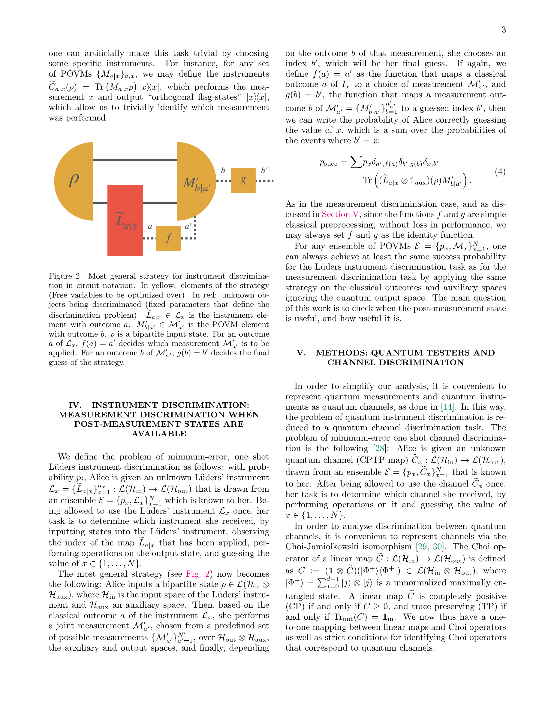

저자: Charbel Eid, Marco T'ulio Quintino | 날짜: 2026 | URL: https://arxiv.org/abs/2602.12258

Figure 2. Most general strategy for instrument discrimina-
양자 측정 판별(quantum measurement discrimination) 과제에서 측정 후 양자 상태(post-measurement state)를 활용하면 성능을 크게 향상시킬 수 있음을 보이는 연구이다. Lüders instrument를 통해 POVM 연산자뿐만 아니라 이에 대응하는 사후 측정 상태까지 고려한 판별 문제를 정의하고 분석한다.
총평: 이 논문은 양자 측정 판별 이론에 중요한 새로운 관점을 제시하며, 사후 측정 상태의 활용이 성능을 임의로 크게 향상시킬 수 있음을 엄밀하게 증명한다. 양자 정보 처리 기본 문제에 대한 깊이 있는 기여로서 높은 가치를 지닌다.